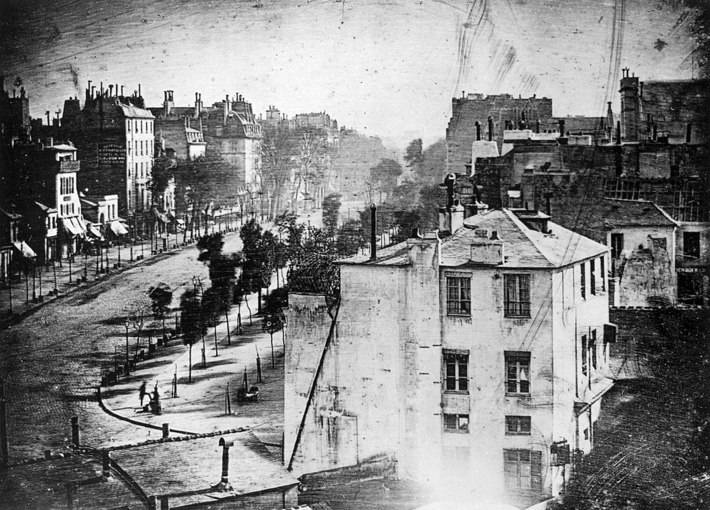
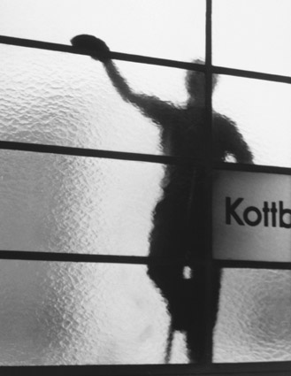

Sources of content
Images
| Original photo by Raúl González on flickr: https://flic.kr/p/oyUwhN | |
| Original photo by Andrés Nieto Porras on flickr: https://flic.kr/p/azkoHd | |
| Original photo by LyraBelacqua-Sally on pixabay: https://pixabay.com/pt/nikon-câmera-lente-1196116/ | |
|  | Original photo by Louis Daguerre - Scanned from The Photography Book, Phaidon Press, London, 1997: https://commons.wikimedia.org/w/index.php?curid=5005681 |
|  | Original photo by Elsa Thiemann - Margot Schmidt (Nachlassverwalterin), CC BY-SA 2.0 de. On: https://commons.wikimedia.org/w/index.php?curid=22735596 |
Texts
The text from the "story.html" is a excerpt from the "Street Photography" article available on Wikipedia (Street Photography).
Disclaimer
All images and texts used in this assignment may have been modified and/or adapted before applied on this project.